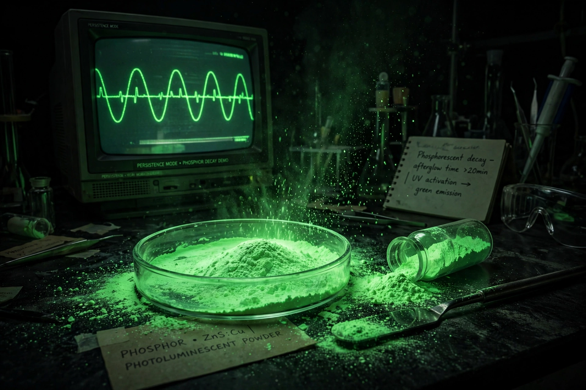

A phosphor is a substance that exhibits luminescence: it absorbs energy — from photons, electrons, or other radiation — and re-emits it as visible light. The name derives from phosphorus, whose glow in the dark was an early example of the phenomenon, although most phosphors contain no phosphorus, and strictly the persistent emission of phosphors is phosphorescence while prompt emission is fluorescence.

| Common materials | Zinc sulfide; strontium aluminate; YAG:Ce; rare-earth doped oxides |
|---|---|
| Applications | CRT and plasma displays, fluorescent lamps, white LEDs, glow-in-the-dark products |
In a typical inorganic phosphor, a host crystal is doped with activator ions (such as Eu2+, Ce3+, or Mn2+). Absorbed energy excites electrons in the activator; when they return to the ground state they emit photons whose color depends on the activator and host. Trapping states in the crystal can delay emission, producing long afterglow — modern strontium aluminate phosphors doped with europium and dysprosium glow far longer and brighter than older zinc sulfide types.
Phosphors coated the screens of cathode-ray tubes and plasma displays, converting electron or UV excitation into red, green, and blue pixels. Fluorescent lamps use halophosphate and tri-band phosphor blends to convert mercury's ultraviolet output into white light. Most white LEDs are blue InGaN chips coated with a yellow-emitting cerium-doped YAG phosphor (plus red phosphors in high-color-quality lamps). Other uses include X-ray intensifying screens, scintillation detectors, security inks, and emergency signage.
Glow-in-the-dark materials were known from the early 1600s (the "Bologna stone," barium sulfide). Zinc sulfide phosphors were developed in the 19th century — the French chemist Théodore Sidot prepared luminous ZnS in 1866 — and radium-activated phosphors were once used for watch dials, with tragic health consequences for the "radium girls" who painted them.
See also: Phosphorescence · Fluorescence · Luminescence · Cathode-ray tube